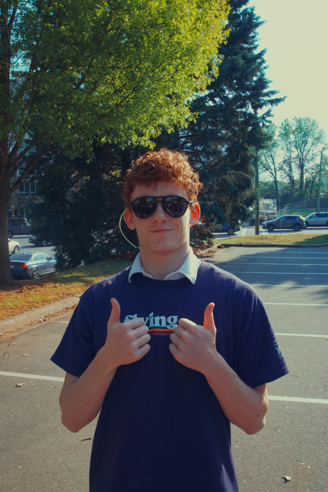

Experience
VoteHub, elections, forecasting, campaigns, and political journalism.

Education
Because, as my parents always say, “education comes first.”
Evanston Township High School
Expected May 2028
0 UW GPA · 0 W GPA
- Honor Society, every year at ETHS
- Student Ambassador
- Swim Team
- The Evanstonian: Stats Writer & Photographer
- Chem/Phys: 3-year course covering full chemistry and physics
- Math: Linear Algebra, Multivariable Calculus, Topics in senior year
Student Fellow, Data Science & Decision Desk
VoteHubContributed to the 2026 midterms forecasting model: built a Kalshi market-scoring pipeline that ingests open-interest volume and liquidity data, computes daily percentile-rank scores, and automatically weights markets for inclusion in the aggregate forecast.
Founder & Data Scientist
IL9CastBuilt a forecasting aggregator for the IL-9 Democratic primary that synthesises prediction-market probabilities, polling averages, and FEC fundraising filings into a single probability estimate, updated daily. Featured in Capitol Fax, the Evanston Roundtable, and the Daily Northwestern as a novel local forecasting tool.
Volunteer Finance Lead
Daniel Biss for Congress (IL-9)Manage end-to-end campaign finance data for a competitive Democratic congressional primary. Researched donor information for candidate call-time and prospecting, along with occasional data help.
Sports Photographer
Chicago Union (UFA)Credentialed photographer covering professional ultimate frisbee; deliver game-day photo packages on 24-hour turnaround. Shoot with Canon R8 system; images used across team social media and press channels.
Project 2028 Podcast
Founder & HostFounded and host a politics-and-policy podcast reaching listeners in 50+ countries; produce, edit, and distribute all episodes.
ManiFed Markets & Manifold Trading
Manifold MarketsCo-founded ManiFed, a play-money peer-to-peer lending platform built on Manifold Markets infrastructure with automated trading bots using mean-reversion strategies and Kelly-criterion position sizing. Ranked #50 out of ~160,000 traders by volume; top 0.5% in profit.
Political Science & Policy Project
Blog & ResearchPublished a political-science blog for four years covering game theory, constitutional law, and voting theory.